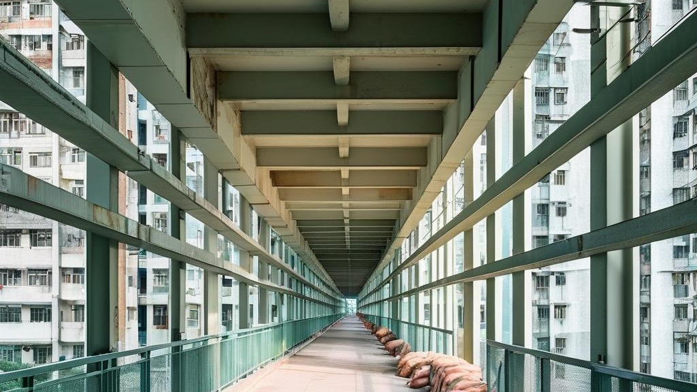
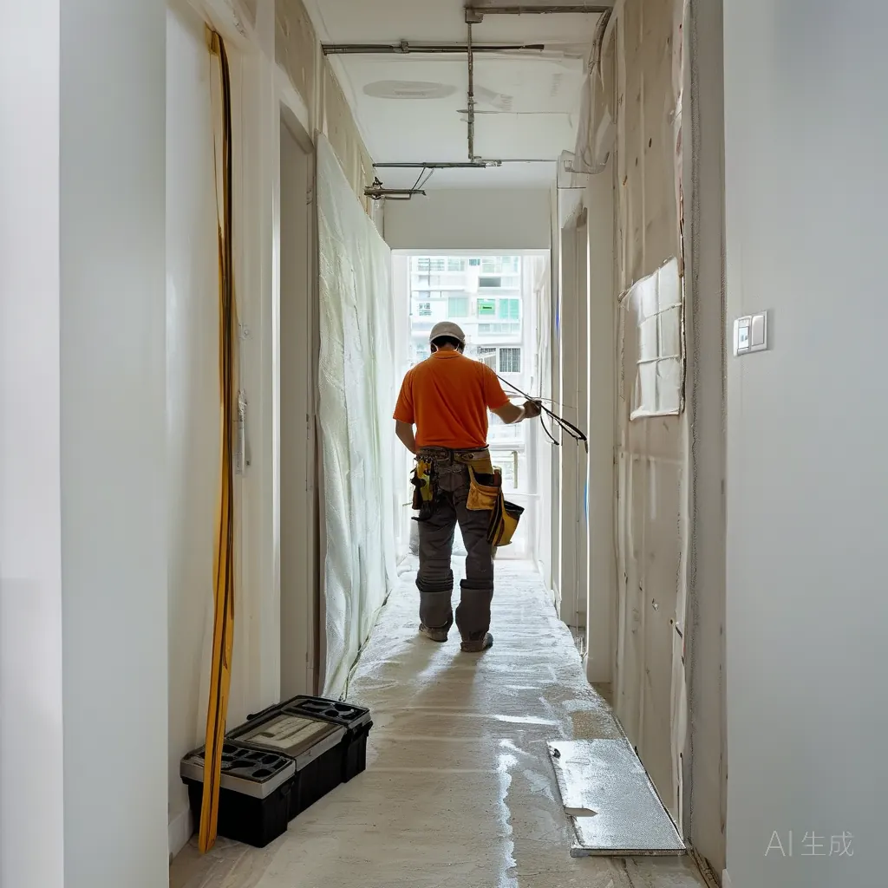
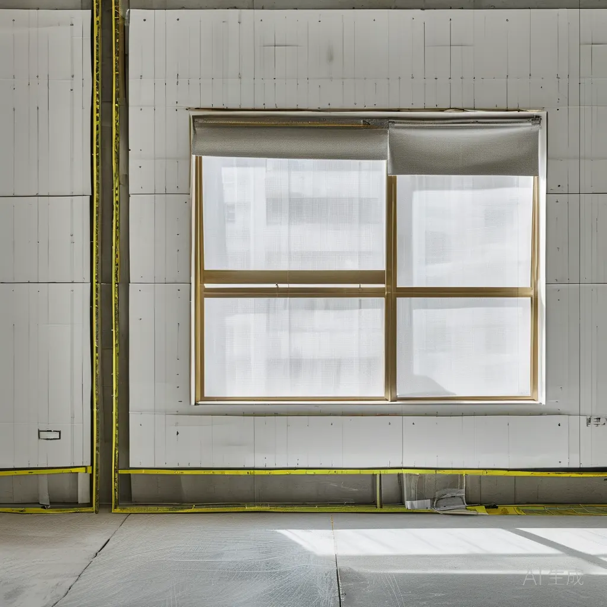
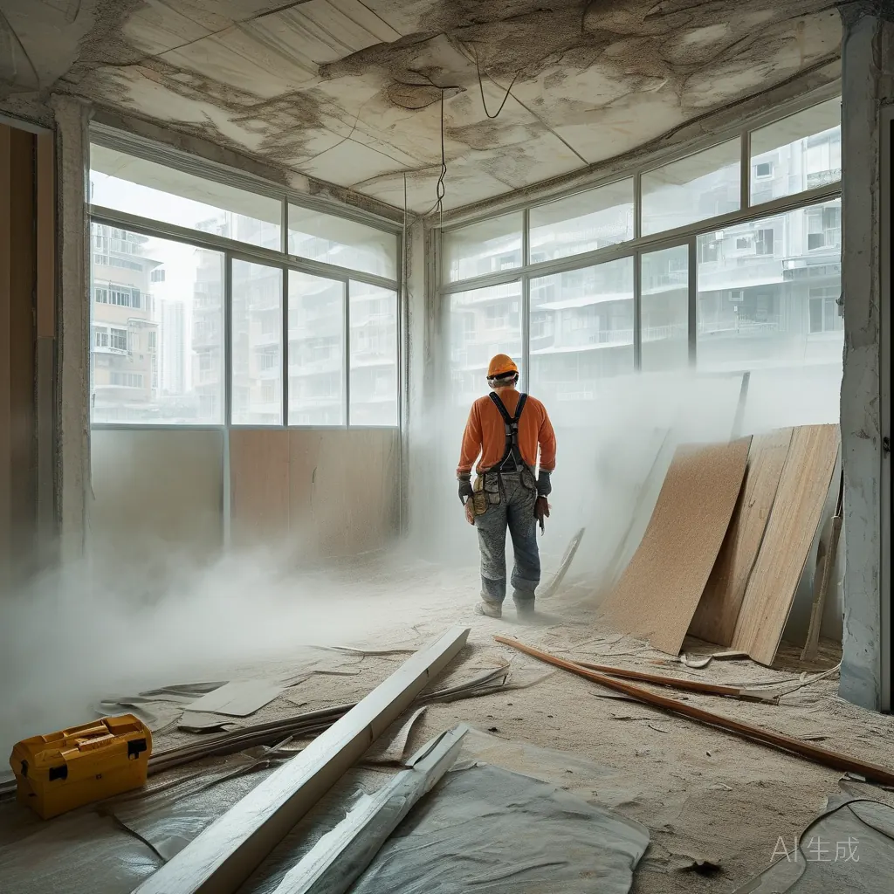
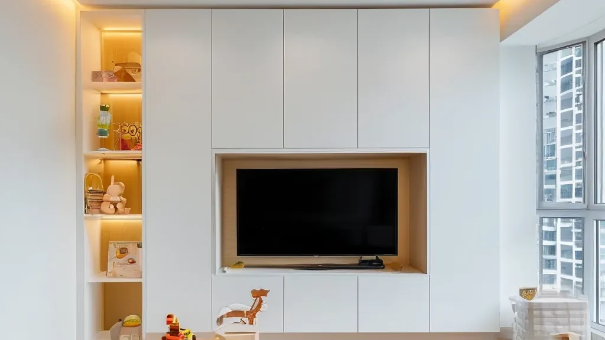

葵涌410呎三房兩孩：阿德教你裝修防護七條規矩

📍 場景：葵涌｜主訪：阿德（清拆泥水師傅，二十二年）｜記錄：張丹楓｜整理：雲蕾｜日期：2026 年 11 月 22 日｜WhatsApp 報價：852 5190 2328
序幕：一單新聞，五個學生
2026 年 11 月 21 日早上十時許，葵涌安捷街一間學校進行工程期間，有五名學生被碎石弄傷，其中兩人眼部受傷，送往瑪嘉烈醫院治理。警方將案件列作有人意外受傷處理。這條新聞在 11 月 21 日下午四時五十分由香港電台發出，我在晚上看到，隔日一早約了阿德去葵涌睇一個單位。
受傷嘅係學生，唔係工人。呢一點，我睇住新聞愣咗幾秒。工地出事，多數人第一時間想「邊個師傅唔小心」；但真正要問嘅係：一塊圍板有冇圍夠高、一段碎石通道有冇封、開工之前有冇人巡過隔籬有冇人會行過。呢啲全部係開工前十分鐘就決定嘅事，唔係出事之後檢討嘅事。
同日下午，蘇太約我哋睇佢個單位。葵涌 410 呎，三房，兩個小朋友，一個剛上小一，一個 K3。佢第一句就講：「我睇到單新聞好驚，我屋企仲有兩個細路。」
「我唔係要最靚，我要安全。你話我知，裝修嗰兩個月，我兩個細路可以點算。」
呢條問題，比任何一張效果圖都難答。
第一幕：阿德話，防護唔係做畀師傅睇，係做畀唔關事嘅人睇
阿德做清拆同泥水二十二年，做過學校、診所、寫字樓，也做過唔少家庭全屋。佢聽完新聞，冇即刻講技術，先講一句：「工地最危險嘅，從來唔係做嘢嗰個人，係路過嗰個人。」
「做嘢嗰個知道自己手上揸住咩，會避。路過嗰個唔知，佢只係低頭睇電話行過。你塊圍板矮半尺、鬆一條索帶，佢就係嗰個中招嘅人。」
「學校嗰單，係唔係就係咁？」
「我唔知現場情況，唔評論人哋。但我可以講，凡係有人行嘅地方做工程，你要假設每一粒碎石都會飛出去。你嘅防護，係為咗嗰個唔知情嘅人行得過。」
呢個講法，我覺得比任何安全標語都實在。因為佢講嘅唔係「小心啲」，而係「你預咗佢會飛」。

第二幕：七條規矩，每一條都係用錢同時間換返嚟
阿德在單位廳中就地畫咗個圖，把有小朋友嘅家庭裝修，拆成七條規矩。呢七條冇一條講「貴」，全部講「做唔做」。
第一，圍板高度同固定。屋內做清拆，廳同走廊之間要有一道實心圍板，高度至少一米八，腳座用沙包或重物壓實，唔可以只用膠紙貼。膠紙貼嘅圍板，一撞就倒。
第二，碎石要「截」唔要「掃」。清拆當日，圍板外一米範圍鋪 12mm 保護板或者厚帆布，碎石跌落地就留在範圍內。收工前掃，唔好等第二日。
第三，防塵網要有，抽風要向內。打拆同開槽粉塵最厲害。窗口位用防塵網封，抽風機放在單位內向外抽，令空氣由走廊流入單位，唔係由單位吹出走廊。方向搞反，整個走廊都係粉。
第四，工具唔可以留過夜在公眾地方。鎚仔、鑿、cutter，收工全部入工具箱上鎖，工具箱放單位內。走廊放一把 cutter 過夜，第二朝有小朋友執到，你講咩都冇用。
第五，電箱同臨時電要掛牌。總掣位貼紙寫「施工中，勿動」，拖板唔可以跨過走廊，電線唔可以橫過行人通道。呢樣係最基本，但最多人懶。
第六，時間要避開人流。住宅大廈嘅清拆同鑽孔，安排在平日早上九點半至下午五點；星期六只做唔出聲嘅工序。呢個唔止係噪音投訴問題，係人流問題——細路放學嗰兩個鐘，走廊最多人。
第七，每日收工前三分鐘「清場」。由最入嗰間房行到門口，一路行一路望地上有冇石、有冇釘、有冇工具。呢三分鐘，阿德做了二十二年，一日冇停。
「呢七條，要加幾多錢？」
「圍板、保護板、防塵網、抽風機，加起來通常兩三千蚊，佔全屋好少。但呢筆錢唔係買材料，係買你兩個細路行過走廊嗰兩個月嘅安心。」

第三幕：410 呎，兩個細路，點樣排期
講完七條，我哋開始排蘇太屋企嘅期。410 呎三房，實際可用面積唔大，兩個小朋友嘅書同玩具已經佔咗半個廳。全屋訂造要拆舊櫃、要鑽孔、要上板，唔可能一次過做完。
「我建議分三段。第一段只做兩間房嘅櫃同地台，廳唔動；第二段做厨房同浴室櫃；第三段最後做廳。每一段之間隔三至四日，等你可以洗地、抹塵、把小朋友嘅嘢搬返原位。」
「分三段，咪貴啲？」
「工序多一次上落，人工會多一點，但唔會多好多。你換到嘅係：兩個細路永遠有一個乾淨嘅空間可以瞓、可以做功課。呢個交易，我覺得值。」
分區之外，仲有三樣要寫入合約，唔好靠口頭：
一，每日收工時間同清場責任。寫明下午六點前收工，收工前清場並拍照傳畀業主。
二，公眾地方使用範圍。材料只可以放單位內或指定位置，唔可以霸佔走廊過夜；有需要佔用，要事先同管理處書面申請。
三，小朋友在場時嘅工序安排。鑽孔、開槽、拆牆呢類會出碎石嘅工序，安排在小朋友上學時間。呢一條，師傅會覺得麻煩，但寫落合約就一定會跟。
至於價錢，我哋照慣例分項列：電視櫃約 $11,000、厨櫃約 $13,000 至 $14,000、兩間房到頂衣櫃約 $17,000、高架地台約 $9,000、安裝約 $3,000 至 $5,000，套餐總額一般落在 $35,000 至 $38,000 之間。以上係故事報價，實際以度尺為準。防護材料另計，通常兩三千。

尾聲：收工前那三分鐘
兩個星期後開工。第一日清拆，我特地在下午五點半返去睇。阿德已經收咗工具，正在由尾房行出廳，手上揸住個電筒照地下。行到門口，佢蹲低，撿起一粒半吋嘅石仔，放入袋。
「呢粒石仔，你當佢係垃圾；一個三歲嘅細路，當佢係糖。」
蘇太站在走廊，望住自己兩個小朋友由電梯行過來。佢冇講嘢，只是把細嗰個抱起。
我做完呢行咁多年，越做越覺得：一間屋靚唔靚，睇相就知；一間屋安唔安心，要睇收工之後嗰三分鐘。你嘅櫃門對得幾齊、木紋揀得幾靚，都係裝修嘅事；走廊地上有冇一粒石，係做人嘅事。防護唔會出現在效果圖上，但佢係全屋裝修裡面，最應該寫入合約嘅一項。

❓ 有小朋友家庭裝修三問
Q1：11 月 21 日葵涌學校嗰單意外，同我屋企裝修有咩關係？
據香港電台 2026 年 11 月 21 日下午四時五十分報道，葵涌安捷街一間學校當日早上十時許進行工程期間，有五名學生被碎石弄傷，兩人眼部受傷送院，警方列作有人意外受傷處理。家居裝修同樣有碎石、粉塵、工具進出走廊，同一類風險存在。分別係：住宅單位你可以要求圍板、保護板、防塵網同固定施工時間，並且寫入合約。
Q2：屋企有小朋友，裝修期間要特別要求師傅做啲咩？
四樣要寫落合約：一，圍板高度至少一米八、腳座壓實；二，碎石工序集中在小朋友上學時間；三，每日六點前收工並拍照清場；四，工具同材料唔留在走廊過夜。再加兩樣自己可以做：把小朋友嘅日常用品搬去一間唔施工嘅房，並在施工區門口放一塊地墊，入屋前換鞋。
Q3：410 呎三房全屋訂造，大概幾錢？
以 410 呎三房為例，分項大約：電視櫃 $11,000、厨櫃 $13,000 至 $14,000、兩間房到頂衣櫃 $17,000、高架地台 $9,000、安裝 $3,000 至 $5,000，套餐總額一般落在 $35,000 至 $38,000。防護材料（圍板、保護板、防塵網、抽風機）另計，通常 $2,000 至 $3,000。以上係故事報價，實際以度尺為準。
本文配圖均為 AI 場景示意圖，僅供場景參考，並非真實工地照片或業主影像。
相關文章：紅磡 430 呎舊樓大維修報價單｜將軍澳 480 呎新樓幾時訂造傢俬｜上水天台加建被罰 12 萬
想知你個單位裝修要幾錢？
📱 一鍵 WhatsApp 張丹楓